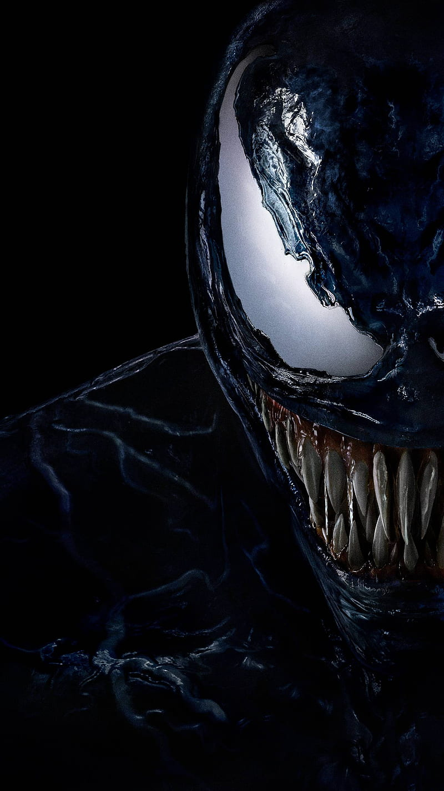

I a'm
VENOM
Ik ben Venom, een antiheld uit het Marvel-universum, en ik ben niet zomaar een gewone superheld. Ik ben een symbioot, afkomstig uit de ruimte, en ik verbind me met mijn gastheer, Eddie Brock, om samen een krachtige eenheid te vormen. Samen beschikken we over bovenmenselijke kracht, snelheid en unieke vaardigheden zoals het vormen van wapens uit mijn eigen lichaam. Mijn relatie met Eddie is complex – we hebben een haat-liefdeverhouding die ons zowel sterker maakt als regelmatig op de proef stelt.
ABOUT ME
ERVARING
Mijn buitenaardse oorsprong als symbioot
Ik ben een Klyntar, een symbiotisch wezen uit een
buitenaardse soort die zich hecht aan andere levensvormen. Mijn aard is om samen te werken met
gastheren, maar ik kan ook mijn agressieve kant laten zien, afhankelijk van hun mentale en emotionele
toestand.
Mijn ervaringen met andere symbioten
Ik heb ook confrontaties gehad met andere leden van mijn soort,
zoals Carnage, mijn afstammeling en een van mijn gevaarlijkste vijanden. Ik heb zelfs de confrontatie
aangegaan met Knull, de god van de symbioten, wat me een diepere kennis van mijn eigen oorsprong en
bestemming heeft gegeven.
Mijn band en conflict met Spider-Man
Een van mijn belangrijkste ervaringen was mijn vroege band met
Spider-Man, of beter gezegd Peter Parker. Toen ik me voor het eerst aan hem hechtte, gaf ik hem nieuwe
krachten en een zwart pak. Maar na verloop van tijd ontdekte Peter mijn duistere invloed en verbrak hij
onze band. Deze afwijzing leidde tot mijn diepe wrok tegen hem, wat vaak mijn acties en doelen
beïnvloedt.